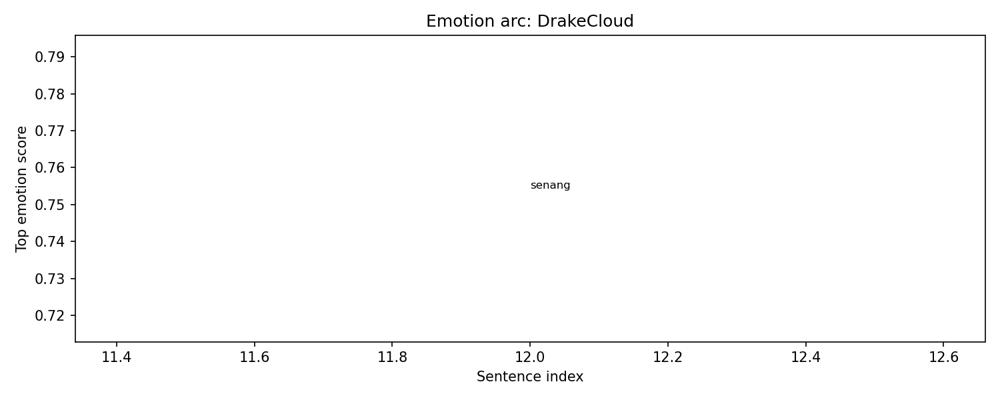
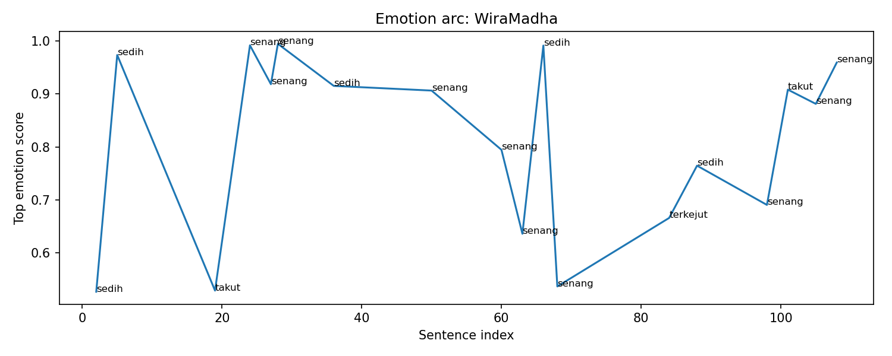
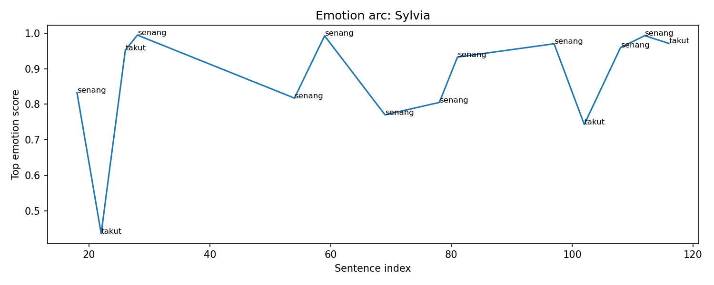

Overall Chapter Summary
WiraMadha arrives at the city and forms a party with various characters to tackle a dungeon, facing a giant monster and strategizing to overcome challenges while developing relationships.
Chapter Drift Analysis
Similarity: 0.8251
Drift: 0.1749
Low drift. The chapter remains semantically close to the early story baseline.
Bug Severity Distribution
Story Bugs Found
Event ID ev_001_001 appears with different summaries.
Meaning: The same event ID ev_001_001
is used for different narrative moments.
Earlier version: Wira selects the quest to Mount Bromo and acquires a swift mount named Osmo.
New version: WiraMadha prepares for the dungeon, meeting fellow players and discussing the quest ahead.
Why it matters: duplicated event IDs can corrupt causality, item ownership, memory tracking, and location tracking.
WiraMadha appears in two locations at the same story step.
Meaning: This indicates spatial continuity risk. A character may appear in conflicting places at the same story step.
HoppyLite appears in two locations at the same story step.
Meaning: This indicates spatial continuity risk. A character may appear in conflicting places at the same story step.
DrakeCloud appears in two locations at the same story step.
Meaning: This indicates spatial continuity risk. A character may appear in conflicting places at the same story step.
Sylvia appears in two locations at the same story step.
Meaning: This indicates spatial continuity risk. A character may appear in conflicting places at the same story step.
Character Sheet
Summary of character state, current actions, potential future plot hole risks, and acquired items/spells in this chapter.
Character Arc Analysis
Kelabang Agni

Emotional Arc Summary
Kelabang Agni initially exhibits a strong sense of joy ('senang') as it emerges and interacts with the environment, reflecting a powerful excitement in the face of potential conflict. This emotion builds through its aggressive actions, such as launching an attack.
Action-Based Interpretation
Agni's joyful moments are marked by its dynamic movements, including attacking and showcasing power. Despite the continuous display of joy, a surprising twist occurs as it suddenly reacts with shock ('terkejut') when changes in battle dynamics occur, which could indicate a shift in the environment or adversities faced.
Key Turning Point
The turning point comes when Kelabang Agni is struck and experiences a status effect of bleeding, which leads to an escalation of its anger directed at Sylvia. This moment signifies a transition from high spirits to heightened aggression.
Narrative Meaning
This chapter emphasizes the duality of joy and aggression in a creature tied to both celebration and violence, symbolizing how challenges can alter emotional states dramatically.
Potential Writing Issue
The emotional spikes, especially the shift from joy to shock, may lack clear event support, potentially leading to inconsistencies in audience perception of Kelabang Agni's emotional journey.
DrakeCloud

Emotional Arc Summary
DrakeCloud's emotional arc in this chapter reveals a sense of excitement and optimism, indicated by a significant score of 0.754 for the emotion 'senang' (happy). This positivity coincides with his introduction as a party member in the dungeon quest.
Action-Based Interpretation
In the initial scene, DrakeCloud prepares for the dungeon alongside fellow players, suggesting camaraderie and shared anticipation. This is reinforced as the team battles the Agni Centipede, where they employ their skills effectively, contributing to a deepening sense of teamwork and achievement.
Key Turning Point
The emotional high point is reached during the successful battle against the Agni Centipede, where DrakeCloud's involvement helps foster a positive group dynamic. This reinforces his initial excitement and strengthens his relationships with the other characters.
Narrative Meaning
DrakeCloud's emotional journey reflects the themes of collaboration and growth in adversity, enhancing the overall narrative of personal connections forming in challenging situations.
Potential Writing Issue
While his happiness aligns with his behaviors, any potential emotional spikes or drops outside of these scenes may create inconsistencies if not supported by further character development or events.
WiraMadha

Emotional Arc Summary
WiraMadha experiences a blend of sadness, fear, and happiness throughout the chapter, reflecting a journey from apprehension to confidence as he prepares for and engages in the dungeon battle.
Action-Based Interpretation
Initially, Wira expresses sadness while tending to his mount, indicating emotional vulnerability. As he meets team members and strategizes, small moments of happiness emerge, especially when he sees potential for companionship with Sylvia. During the battle against the Agni Centipede, Wira's confidence grows, demonstrated through successful combat maneuvers, despite moments of fear regarding team dynamics.
Key Turning Point
The turning point occurs after the team's triumph, where Wira shares a meaningful conversation with Sylvia about future quests, solidifying his emotional connection and portraying growth in his confidence.
Narrative Meaning
This chapter highlights Wira's transformation as he learns to navigate teamwork and build relationships, showcasing the importance of collaboration in overcoming challenges.
Potential Writing Issue
There is a notable emotional fluctuation, particularly the sharp shifts from sadness to joy and fear without substantial narrative grounding, which may affect character coherence.
HoppyLite

Emotional Arc Summary
In Chapter 002, HoppyLite experiences a poignant emotion of sadness as indicated by the high emotion score. This sadness could reflect a sense of isolation or loss as they navigate the dynamics of the new party.
Action-Based Interpretation
HoppyLite is introduced as a member of a diverse group preparing for a dungeon quest. While actively participating in the planning and strategizing, there's no direct action reflecting their emotional state, particularly in scenes portraying camaraderie and teamwork.
Key Turning Point
The turning point comes during the team's battle against the Agni Centipede. Despite actively contributing to the combat, the absence of a shift from sadness to empowerment suggests a disconnect between their internal emotions and external actions.
Narrative Meaning
This tension indicates a deeper struggle within HoppyLite, raising questions about their motivations and connections to the group, which could enrich character development.
Potential Writing Issue
The prominent sadness emotion lacks a clear narrative basis through HoppyLite's interactions in this chapter, suggesting a potential inconsistency that may need to be addressed for emotional coherence.
Osmo

Emotional Arc Summary
Osmo exhibits fluctuating emotions throughout the chapter, starting with joy as he arrives at the city Sagara Rimba. This positive feeling is evident when he pauses at the city gate. However, his mood shifts to sadness when WiraMadha shows affection by stroking Osmo's neck, suggesting a sense of fatigue or longing after their long journey.
Action-Based Interpretation
Osmo's actions are limited in this chapter, primarily serving as a mount for WiraMadha. His emotional state reflects his role; he feels happy to be arriving at a rest point but appears burdened by the travel workload, indicated by his sweating and the subsequent sadness felt when WiraMadha tends to him.
Key Turning Point
The key turning point is WiraMadha's gesture of care, which triggers Osmo's shift from joy to sadness. This action suggests Osmo's vulnerabilities and hints at their deepening bond, indicating his emotional investment beyond mere functionality as a mount.
Narrative Meaning
This emotional arc emphasizes the bond between characters, portraying Osmo not just as a creature but as a being with feelings, thus adding depth to the interactions and relationships in the story.
Potential Writing Issue
While Osmo's emotions show legitimate shifts, the lack of substantial actions on his part raises potential inconsistencies. His sadness does not correlate directly with the chapter's events, suggesting a need for more engaging interactions or actions from his character.
Tetes Air Kehidupan-Rere

Emotional Arc Summary
Tetes Air Kehidupan-Rere experiences a significant emotional journey in this chapter, moving from anger to joy, and then to sadness, reflecting the dynamic nature of the party's challenges.
Action-Based Interpretation
The chapter begins with Rere being called upon, evoking anger as she hears, "Turunlah dan bantu kami." Her initial reluctance is juxtaposed with joy when her appearance as a small fairy seems to uplift the group's spirit. This joy, however, quickly shifts to sadness as she drops into "support mode," highlighting a sense of obligation that overshadows her earlier elation.
Key Turning Point
The turning point occurs when Rere embraces her supportive role and begins to heal, signified by her action of using healing mist; this reflects a deeper understanding of her importance in the party.
Narrative Meaning
This emotional arc illustrates the internal conflict Rere endures between her desires and her responsibilities to the party, enhancing her character depth.
Potential Writing Issue
The emotional spikes, particularly transitioning from joy to sadness without clear prompts, could be seen as inconsistent and may require additional context to support her emotional shifts.
Sylvia

Emotional Arc Summary
Sylvia's emotional journey in this chapter oscillates between excitement and fear. Initially feeling enthusiastic about the adventure, her confidence is shaken during the intense battle with the Agni Centipede, leading to moments of fear. However, her spirits are lifted again once the team succeeds, especially when she collects the essence shard.
Action-Based Interpretation
Sylvia begins by preparing for the dungeon with enthusiasm, indicated by her warm interactions with WiraMadha and other players. During the battle, her initial excitement turns to fear as the monster targets her, evident in her nervous reactions. Post-battle, her comprehensive partnership with WiraMadha revitalizes her spirits, confirming her commitment to future quests.
Key Turning Point
The major turning point occurs when Sylvia gathers the Essence Shard post-battle. This moment of triumph reinvigorates her confidence, signaling an emotional reset after the earlier fearfulness.
Narrative Meaning
This emotional arc emphasizes growth through adversity, showcasing how fear can transform into strength and collaboration can lead to empowerment.
Potential Writing Issue
While Sylvia's fear during the battle is palpable, her emotional spikes may feel inconsistent if not carefully connected to the actions or dialogue surrounding those moments, risking a jarring reader experience.
Event Timeline
Lore Graph
Nodes represent characters, scenes, events, items, facts, and locations.